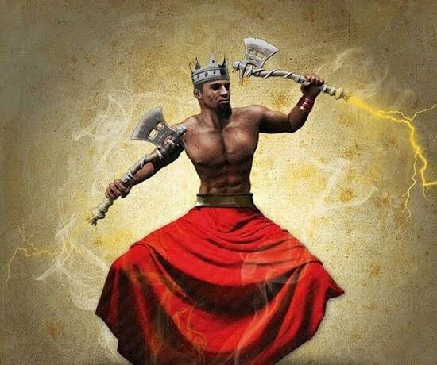

The flag of Nigeria was designed in 1959 and first officially hoisted on 1 October 1960. The flag has three vertical bands of green, white, green. The two green stripes represent natural wealth, and the white represent peace and unity .
These are some of them
|
Amdioha  |
DeitiesIgbo god leader Photo by: Popo Baba Amadioha is the Alusi or Agbara of thunder and lightning of the Igbo people of southeastern Nigeria. He is amongst the most popular of Igbo deities and in some parts of Igboland, he is referred to as Amadiora, Kamalu (which is short for Kalu Akanu), Kamanu, or Ofufe. Astrologically, his governing planet is the Sun. Other Images by Lara Davies
|
| Title | Artist | Year | Size (height x Width) | ||
|---|---|---|---|---|---|
| The Desth of Marat | jacques Louis David | 1793 | 128cm 162cm | ||
| Burial at Ornans | Gustave Courbet | 1849 | 663cm 314cm | ||
| Artist | Title | Year |
|---|---|---|
| Jacques-Louis David | The Death of Marial | 1793 |
| The Intervention of the Sabine Women | 1799 | |
| Napoleon Crossing the Alps | 1800 |